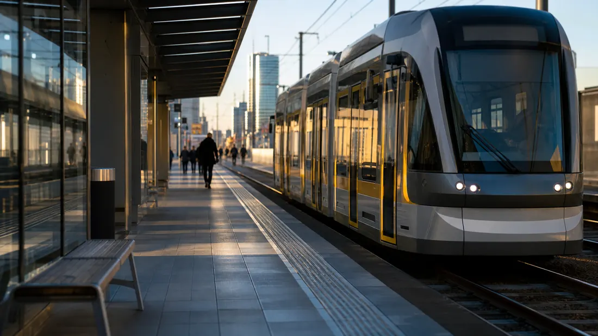

Frankfurt · Polizei
Frankfurt (ots) - (ma) Am Mittwochmittag (25. November 2026) kam es im Bereich der Schwalbacher Straße zu einem größeren Polizeieinsatz, nachdem sich dort eine Person im Keller eingeschlossen habe und durch Anwohner ein Knallgeräusch vernommen ...
2026-11-26
Polizei Frankfurt Presse

Frankfurt · Polizei
Frankfurt (ots) - (ma) Im Rahmen der "Innenstadtoffensive" waren am gestrigen Mittwoch (25. November 2026) erneut Einsatzkräfte der Polizei Frankfurt, des Hessischen Polizeipräsidiums Einsatz, der Bundespolizei und der Stadtpolizei mit ...
2026-11-26
Polizei Frankfurt Presse

Frankfurt · Polizei
Frankfurt (ots) - (di) Vergangene Nacht (25. auf 26. November 2026) gelang im Bahnhofsviertel die Festnahme eines mutmaßlichen Räubers. Dieser steht im Verdacht, einem 20-Jährigen das Mobiltelefon sowie dessen Geldbörse geraubt zu haben. Nach ...
2026-11-26
Polizei Frankfurt Presse

Frankfurt · Verkehr
Frankfurt (ots) - (ma) Am Dienstagabend (24. November 2026) meldeten besorgte Anwohner unter anderem lautes Geschrei aus einer Wohnung in der Wolfhagener Straße. Als die Beamten kurze Zeit später gegen 22:50 Uhr vor Ort eintrafen, nahmen sie ...
2026-11-25
Polizei Frankfurt Presse

Frankfurt · Verkehr
Aktuelle Meldungen zu Verkehr in Frankfurt. Details stehen auf der Originalseite. Weitere Details, Hintergründe und vollständige Angaben stehen in der verlinkten Originalmeldung.
2026-11-27
VGF Frankfurt News

Frankfurt · Wirtschaft
Aktuelle Meldungen zu Wirtschaft in Frankfurt. Details stehen auf der Originalseite. Weitere Details, Hintergründe und vollständige Angaben stehen in der verlinkten Originalmeldung.
2026-11-27
Mainova Frankfurt Presse